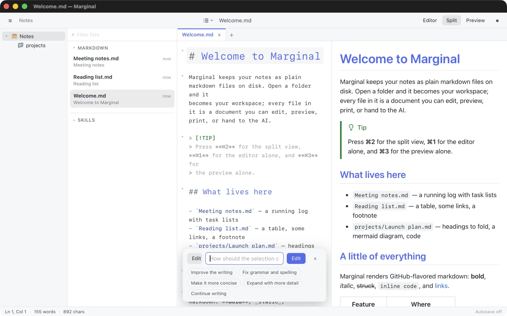

⌘K in the editor
Select some text, press ⌘K, and say what to do with it. The rewrite streams in as an inline diff, and you accept or reject it as a single undo step. It runs on your own API key from Anthropic, OpenAI, Google, xAI, or Alibaba Cloud, kept in the system keychain.